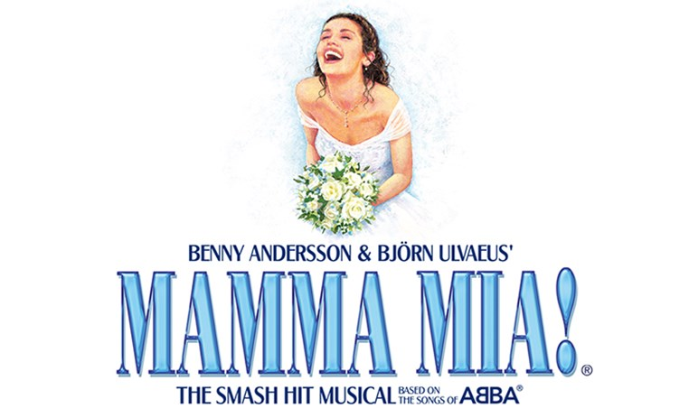

妈妈咪呀
——"创造了音乐剧的历史"

英文名称
Mamma Mia
首演日期
1999年
首演地点
美国
制作团队
菲利达·劳埃德
凯瑟琳·约翰逊...
《妈妈咪呀》于1999年4月6日在伦敦的爱德华王子剧院首演，随后转战北美，第一次公演的时间是2000年5月23日，地点则是皇家亚历山德拉剧院。之后原班演员人马又来到旧金山进行巡演，并分别在洛杉矶和芝加哥待了一段时日，并于2001年10月18日在冬日花园剧院正式拉开序幕。
该剧讲述年轻女子索菲在结婚前寻找生身父亲，却和妈妈唐娜在希腊的海岛上迎来了三个陌生男子，最终，母女间的误解烟消云散，双双得到了幸福。
剧情简介
时间退回到1999年，那是希腊一座位置偏僻、风景迷人的美丽小岛，多娜和女儿苏菲、以及苏菲的未婚夫斯盖伊在这里共同经营了一家充满地中海风情的小旅店。
苏菲与斯盖伊的爱情即将修成正果，两人都在为马上就要来临的婚礼庆典而紧张的忙碌着，苏菲的两位闺密陆续以伴娘的身份抵达小岛，面对着自己最好的朋友，苏菲终于忍不住说出了一直隐藏在心中的秘密：原来她无意中看到了母亲的日记，发现有三个男人可能是自己的父亲，他们分别是商人山姆·卡米克尔、探险家比尔·安德森和银行家哈利·布莱特，苏菲瞒着母亲向他们发出了婚宴邀请。而这三个来自于不同国家、不同城市的人，已经出发踏上了回岛之路，他们在这里都有一桩未了却的心愿：差不多20年前，他们都曾为同一个女人而意乱情迷过，并为她伤透了心，那个女人就是多娜。
为了女儿的婚礼，多娜特别找来了以前组乐队时的好姐妹，有妙语如珠的萝茜，还有经历了多次离婚、现在已经是个小富婆的坦妮娅。苏菲特别将这两位小姨介绍给了未婚夫斯盖伊，并告诉他们，自己正在谋划着为婚礼设计一个网站，借此吸引更多的游客来岛上，因为稀少的客源，致使小旅店的经济来源非常不稳定。
当三个可能是苏菲父亲的男人同时登上小岛时，需要一下子面对三个前恋人，多娜多多少少觉得有点发懵，而她最终向萝茜和坦妮娅透露了那个一直深藏在心中的不安：就连她自己，也不知道到底谁才是苏菲的亲生父亲。婚礼的前夜，一切该来不该来的人都聚焦到了小岛上，每一个都不得不面对自己心中那个曾经被忽视的小秘密，当多娜最终鼓足勇气告诉苏菲，她并不确定三个男人中，哪个才是她的父亲时，山姆、比尔和哈利却同时表示，他们为有苏菲这样一个女儿而感到骄傲，所以他们愿意做她三分之一的爸爸。不仅如此，多娜和山姆，似乎同时又在对方身上找到了触电的感觉——虽然有点混乱，但每个人最终都会找到那份属于他们自己的答案。
主要歌曲
1.Honey, Honey——苏菲、丽萨、阿莉
2.Money, Money, Money——多娜、萝茜、坦妮娅等
3.Mamma Mia——多娜
4.Dancing Queen——马吕斯
5.The Winner Takes It All——多娜
6.Take a Chance on Me——萝茜、比尔
......
创作背景
《妈妈咪呀》是一部以瑞典流行乐队ABBA的歌曲为基础创作的音乐剧，其概念是由制作人朱迪·克莱默提出的。她设想了一个利用ABBA乐队歌曲的故事，这些歌曲可以被编织成一个连贯且感人的故事。
英国作家凯瑟琳·约翰逊被邀请为这个项目编写剧本。她创造了一个关于母女关系、爱情和家庭的故事，将ABBA的歌曲巧妙地融入其中。所有的音乐和歌词都是由ABBA的成员本尼·安德森和比约恩·奥瓦尔斯创作的。他们还担任了音乐剧的制作团队成员，确保音乐的质量和风格与原作相符。
由于音乐剧的巨大成功，环球影业将其改编成了同名电影，该电影于2008年上映，由梅丽尔·斯特里普主演，并同样取得了商业上的巨大成功。随后，在2018年又推出了续集《妈妈咪呀！回来了》，进一步扩展了这个系列的故事。
“《妈妈咪呀》是最极致的让人感觉良好的演出——一场充满活力的逃避现实的狂欢，会让你在过道上跳舞。”